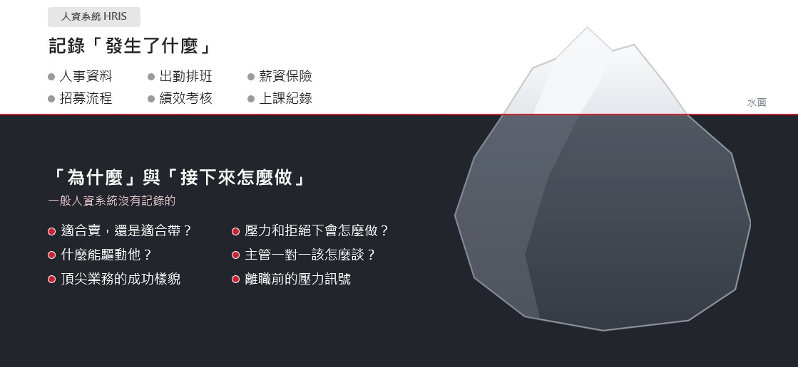

業績，不該只靠一兩個人撐。
想保住明星球員，又想養出明星球隊？不用二選一。
這些情況，是不是很熟悉？
「業績都靠那一兩個人，他一請假，整個月就難看。」
業績集中在少數人身上，等於把公司的營收，押在他們的去留上。
「我是公司最會賣的人，其他人都在等我下指令。」
老闆一個人扛成交，團隊習慣等答案。老闆越忙，團隊越不會自己判斷。
「把業績最好的人升主管，結果團隊業績反而掉了。」
他忙著自己搶單、對下屬沒耐心。公司同時失去一位頂尖業務，換來一位辛苦的主管。
「面試時很會講，進來三個月卻做不出業績。」
履歷證明他做過什麼，面試看到他怎麼表達，卻看不到他在壓力和拒絕下會怎麼做。
「送去上課回來很感動，但並沒有反應在工作表現上。」
課程教的是技巧，回到現場沒有人帶、心態也沒改變，行為很快就回到原點。
「主管知道每個人個性不同，卻不知道具體怎麼指導。」
測評報告做了、也看了，主管真正需要的是：第一句話怎麼開口，怎麼讓他願意做、願意調整。
「測評做了，報告卻躺在抽屜裡。」
問題通常不在工具，而在沒有清楚的方法，知道怎麼把它用到帶人的現場。
「報告交出去之後，老闆問：然後呢？」
想接著推動後續輔導，卻要花大量時間跨部門溝通；人性上，員工很難對公司說實話，常常碰不到真正的痛點。
「課上得很投入，回到工作崗位又打回原形。」
講師能陪的只有教室裡的時間；回到現場沒有人帶、制度也沒跟上，成效很難被看見。
四個數字，看懂業績為什麼會卡住。
-
45%
45% 的 B2B 採購者，在最近一次採購中用了 AI 做功課；但 69% 的採購者，仍希望找業務確認 AI 給的資訊。業務的必備職能，已經從推銷產品，變成精準理解需求、協助判斷。
可是多數企業選業務，仍只看「會不會賣」
Gartner 2025 年 B2B 採購者調查 -
0.2
業務銷售職務的人才供需比只有 0.2，五個職缺搶一個人。結果容易落入「誰來就用誰」，適才適所在招募第一步就失守。
要找會賣的人，企業其實沒有選擇
104 人力銀行《2026 科技業人才白皮書》↗ -
2倍
業務的年流動率是 34.7%，一般職務是 17.8%，幾乎兩倍。走一位，公司要付三次代價：離職的成本、重新找人與訓練，還有他帶走的客戶與資源。
好不容易找到好的，又留不住
Forbes（Baker Communications 引述 ↗） -
−7.5%
升任前業績是別人兩倍的人，升任後帶的團隊業績成長反而少 7.5%（追蹤 214 家公司、1,553 次升遷）。會賣，不等於會帶：少了一位頂尖業務，又多了一位帶不動團隊的主管。
為了留人，升業績最好的當主管
Benson, Li & Shue｜Quarterly Journal of Economics ↗
於是，老闆陷入兩難
不升他，怕他走；
升了他，怕團隊垮。
要保住明星球員，還是養出明星球隊？
大部分企業不缺方法，
或許只差一個新的視角。
| 常見的做法 | 可能沒看到的 | 第三方怎麼說 |
|---|---|---|
| 把業績最好的業務升主管 | 會銷售不等於會帶人 | 一份分析 214 家企業、超過 1,500 位升任主管業務的研究發現：個人業績越好越容易被升官，但他帶的部屬業績反而下滑；升任前業績每多一倍，部屬業績平均下降約 7.5%。Benson, Li & Shue｜NBER ↗ |
| 靠資歷和過去績效選主管 | 看不到帶人的天賦 | Gallup 指出，企業選錯主管人選的比例高達 82%；大約每 10 人只有 1 人具備高度帶人天賦。Gallup ↗ |
| 靠履歷和面試挑人 | 看不到他在工作裡會怎麼做 | 整合數十年選才研究的分析發現：跟工作直接相關的工具預測力最高；評量若以「在工作中」的情境作答，預測力也明顯較高。Sackett 等人 2022｜SIOP ↗ |
| 送去上銷售課 | 回到現場沒人帶，很快回到原點 | 訓練轉移研究一再指出：課程能不能用在工作上，很大程度取決於回到職場後的環境，尤其是主管和同事的支持。Baldwin & Ford 模型 ↗ |
| 加獎金、訂業績目標 | 每個人被驅動的方式不一樣 | 哈佛商業評論刊出的業務激勵研究發現：業務團隊不是同一種人，明星、中堅與落後的業務，各自有不同的能力與內在動機，對同一套獎金制度的反應也不同；例如明星業務遇到獎金上限，可能就停下腳步。Steenburgh & Ahearne｜HBR 2012 ↗ |
| 請頂尖業務上台分享 | 他自己也說不清楚做對了什麼 | 哲學家 Polanyi 提出「隱性知識」：人知道的，比說得出來的多。 |
| 用通用 AI 問「這個人該怎麼帶」 | AI 只知道您告訴它的，不認識這位成員 | 一份檢視五款主流 AI 助理的研究發現，AI 普遍會順著使用者表達的看法回答；主管若先入為主，AI 往往也跟著附和。彭博社以 GPT 對履歷排序測試數千次，也發現結果會因姓名暗示的族裔而出現偏差。再加上一般 AI 沒有這位成員的行為數據，給的多半是通用建議。Sharma 等人 2023｜arXiv ↗Bloomberg 2024 ↗ |
天時地利，處於被動；
人和，是唯一能主動經營的。
要讓「人才」變成持續產生價值的「人財」，需要三件事一起配合：
人｜價值認知
個人想要的，和公司要去的方向對不上，再多教育訓練，也有賞味期限。
從業務對自己角色與價值的定位開始，對齊個人與公司要去的方向。
工具｜數據相輔相成
路遙知馬力，但人是會變的。一次評測只看到單點，持續追蹤，才看得見全貌。
持續追蹤每個人的變化，在離職之前看見訊號。
制度｜看得見未來，願意分享
人會留下，是因為在這裡看得見自己的下一步；經驗會傳下去，是因為分享的人被看見、有回報。
把頂尖業務的判斷變成團隊學得會的能力；升遷不只一條路。
三件事少了任何一件，
再多資源投入都會卡關。
留人，不是把人留住，而是讓他在這裡看得見未來；傳承，不是要他交出祕訣，而是讓分享成為他的舞台。
很多頂尖業務不是不教，而是說不出來。複製卓越讓傳承有回報、有舞台。從「怕被取代的人」，變成「團隊都在學習的標竿」。
為什麼要用行為科學看人？
人資系統記錄的是「發生了什麼」：出勤、薪資、考績、上過什麼課。但真正決定一位業務能不能成為資產的，在水面下：他適合賣還是適合帶？在壓力和拒絕下會怎麼做？主管明天該怎麼跟他談？這些，需要行為科學。

比履歷和面試更貼近工作情境
整合數十年選才研究的分析發現：和工作直接相關、以「在工作中會怎麼做」為出發點的評量，預測力明顯較高。Sackett 等人 2022 ↗
以頂尖業務為標準
用公司自己的頂尖業務當比對基準，招募與升遷都有依據。比對出來的，是貴公司自己的成功樣貌，而不是別人的標準。
看出誰適合升主管
研究發現，升主管前業績越好的人，帶出來的團隊業績成長反而越少。用行為數據看帶人天賦，避免一次升遷、損失兩次。
人是會變的，需要動態管理
換主管、換職務、家裡有變化，同一個人半年後可能完全不同。比對他自然的樣子和他覺得工作要求的樣子，差距就是壓力訊號，能在離職之前介入。
比直接問 AI 更可靠
通用 AI 的答案取決於提問的人，主管先入為主，AI 往往跟著附和。行為數據不會因為誰問而改變，也不會因為把員工資料貼到公開的 AI 平台，產生個資等資安風險。
補上知識管理的盲點
知識管理多半靠人的意識：覺得值得留下的，才分享留下。但真正的重點，常是傳承者沒意識到、早已變成自然判斷的心法，或他自己覺得不重要而沒說出來的部分。搭配複製卓越策略，把他的判斷變成團隊學得會的能力：成就可以帶走，核心的判斷能力留在公司。
人才管理，也是 ESG 的一部分。
全體上市櫃公司都要申報 ESG 資訊；金管會也要求分階段接軌 IFRS 永續揭露準則，揭露範圍將從氣候擴大到勞工健康與安全等議題。就算沒有上市，大客戶也會開始要求供應鏈提供 ESG 資料。人才決策有數據佐證，已是趨勢。
員工留任
及早看見壓力訊號，在離職之前介入，降低流動率。
人才培育
依每個人的行為特質規劃帶法與培訓，讓培育成效看得見、說得清。
健康與安全
看見誰正在勉強自己，主管一對一有依據，照顧員工的身心狀態。
關鍵人才盤點
知道誰是值得複製的頂尖人才，以及他和其他人的差異在哪裡。
主管接班規劃
升遷前先看帶人天賦，不再只看個人業績，避免錯升主管。
用人決策有依據
招募、升遷與獎勵有數據佐證，經得起董事會與利害關係人的檢視。
資料來源：金管會 IFRS 永續揭露準則分階段適用規定（自由時報）；1,958 家上市櫃公司應申報 ESG 資訊（工商時報）；從資源到資本（工商時報）

我不是您團隊裡最會賣的人。
但我知道，怎麼讓最會賣的那個人的方法，傳給整個團隊。
我在企業經營層身邊擔任幕僚 20 多年，也負責過人才發展。我每天的工作，就是解決老闆說出口與沒說出口的問題。服務老闆，思考的高度與角度，往往比服務客戶需要考量更多面向。
這些年，我看過很多中小企業靠一兩個人撐業績；升了最會銷售的人當主管，團隊卻開始掉業績；花錢上課，下課後一切回到原點。問題往往不在誰不夠努力，而是人才的價值認知、選人用人的依據、留人與傳承的制度，沒有一起到位。
1. 理解老闆
20 多年經營層幕僚與人才發展經驗。理解老闆在意的優先順序，也理解一個決定要在組織裡推動，需要顧到哪些人、哪些環節。
2. 對人的洞察
多年在組織裡觀察人、發展人，再加上 NLP 專業執行師（美國 ABNLP）的訓練：
- 複製卓越策略（Modeling Excellence）：找出頂尖業務連自己都說不清楚的成交心法，讓每位員工都能成為公司的資產。
- 從屬層級（Logical Levels）：從「我是誰」開始改變業務對銷售的看法，讓每個人從「我有可能做到嗎？」轉成「我要怎麼做到？」。
- 結合行為科學數據，看懂每個人適合的位置與帶法。
NLP 在學術界仍有不同看法，所以我不談神奇效果，只用其中兩套經得起檢驗的方法：「複製卓越」的原理，與認知心理學用來萃取專家隱性知識的「認知任務分析」相近，整合研究顯示以這種方式設計的訓練成效相當顯著（Tofel-Grehl & Feldon, 2013）；「從屬層級」則是我在實務上，用來對齊信念與行為的架構工具。
3. 成交實戰與教練資格
師承 Dan Lok，具備高單價成交訓練教練資格。成交經驗來自自己的教練事業，以及二十年向經營層提案：每一次提案，都是一場高單價成交。合作企業可同時獲得我的高單價成交線上課程。
4. GPHR® 與就業服務專業
持有美國 HRCI 全球人力資源管理師（Global Professional in Human Resources，GPHR®）、勞動部就業服務乙級技術士證照。除了業務團隊，也能協助企業處理跨國人力配置與聘用；並可從學院培養的人才中，為企業引薦合適人選。
5. 專業形象
持有日本 KOZU Style 專業形象顧問認證，由 AICI 國際形象顧問協會（Association of Image Consultants International）日本分會前會長神津佳予子一對一授課。業務給客戶的第一印象，也是成交的一部分；從外在形象到內在認同，一起提升。
我把「資產型人才」的方法論系統化，寫成《把資歷變資產》。書裡不只寫給想讓經歷增值的工作者，也寫給想打造資產型人才團隊的經營者。
每家公司最珍貴的資產，往往是那一兩位頂尖業務；但他們的成交心法，常常跟著人一起離開。
我陪企業把這份卓越找出來、放大，傳給整個團隊。
真正的成本，不是工具多少錢。
上面的循環，每轉一圈都有成本。以台灣的薪資與法定福利試算：
走一位業務或業務主管，公司損失多少？（台灣版試算）
| 項目 | 業務 | 業務主管 |
|---|---|---|
| 薪資福利：年薪 ×（1＋法定福利）＋車馬津貼 | 75 萬 | 98 萬 |
| 招募與訓練：刊登、獵頭、面試時間、新人訓練 | 5 萬 | 26 萬 |
| 空窗損失：職缺空著的那段時間少做的業績 | 26 萬 | 30 萬 |
| 上手期損失：新人還沒上手少做的業績 | 30 萬 | 18 萬 |
| 連鎖離職：主管走，多走一位部屬 | — | 80 萬 |
| 合計 | 約 136 萬 約年薪 2.3 倍 | 約 252 萬 約年薪 3.2 倍 |
還沒算進去的：客戶跟著走、團隊跟著散。年薪依 104 薪資情報中位數（業務月薪 5 萬、主管 6.5 萬，2026 年 11 月）；法定福利依 2026 年雇主負擔勞保、健保、勞退、職災（業務約 19%、主管約 18%）；空窗期依 104《2026 年人資 FBI 報告》（一般員工 40 天、主管 77 天）。範例假設：每位業務月毛利 20 萬；主管帶 6 人，空缺時團隊業績下滑 10%、上手期下滑 5%。以上為範例粗估，請依實際狀況調整。
第一步｜您想試算哪一個職位？
第二步｜填入的實際數字（金額單位：萬元，結果會即時更新）
| 薪資福利：年薪 ×（1＋法定福利）＋車馬津貼 | |
|---|---|
| 招募與訓練 | |
| 空窗損失：該員每月業績毛利 × 空窗期 | |
| 合計 |
以上還不包含這些看不見的成本
- 新人上手期，業績還沒到位的落差
- 主管異動時，整個團隊的業績下滑
- 主管離職，部屬跟著走的連鎖離職
- 客戶名單流失、客戶信賴與口碑
這些往往才是最大的一塊，只是很難算進報表裡。
法定福利依 2026 年雇主負擔勞保、就保、健保、勞退、職災（業務約 19%、主管約 18%）。
錯聘，不一定會離職。
但留下來的代價，可能比離職更大。
74% 將近四分之三的雇主，都曾聘錯人。CareerBuilder ↗
離職的成本算得出來；但錯的人不走，團隊人心流失、對的人因此離開，才是最難挽回的。
主管約有 17% 的時間，花在管理表現不佳的員工，等於每週快一天。
Robert Half（SHRM 報導）↗過半的用人主管表示，錯聘讓團隊離職率升高；最先撐不住的，常常是原本表現好的人。
Robert Half（HR Reporter 報導）↗不是先決定導入工具，
而是先確認真正需要處理的問題。
填寫企業現況
提供公司與團隊規模、目前的人才課題、涉及職位，以及已使用的測評或人才制度。
進行線上對談
以30～45分鐘了解問題目前如何被看見、現有資料能回答什麼，以及還缺少哪些關鍵資訊。
提出下一步建議
可能結果：
- 暫時不需要導入評測
- 先釐清職務或管理問題
- 選擇小規模對象進行評測與解讀
- 進一步規劃人才盤點、團隊或接班應用
我們不是競爭，是接力。
您很懂測評、很會上課，客戶也信任您。但報告交出去、課程結束之後，常常卡在同一個地方：
「報告交了，客戶問：然後呢？」
主管看懂了報告，卻不知道明天要對部屬說什麼。
「學員上完課，回到工作崗位又打回原形。」
回到現場沒有人帶，制度也沒跟著調整。
「客戶要的是解決方案與可見的成果，不只是一份分析。」
老闆最後問的，永遠是：業務團隊有沒有更會賣？
您負責的
評測、報告解讀、既有課程與客戶關係。您的工具不需要換，客戶仍然是您的客戶。再搭配動態管理工具，和客戶建立更長期穩固的關係，您的建議也能更精準。
Ginger 接力的
NLP 複製卓越，把頂尖業務的心法拆出來；主管一對一現場演練；高單價成交訓練；升遷雙軌等制度建議，讓老闆拍板、團隊做得到。
您可能想先知道
可以只使用 Ginger 的服務，不做行為評測嗎？
可以。例如企業內訓或工作坊、複製頂尖業務的成交心法、高單價成交訓練，都可以單獨進行。差別在於少了行為數據，選人、升主管與帶人的客觀判斷，會更依賴現場觀察與訪談。
行為數據工具加上 Ginger 的陪跑，跟單獨做評測有什麼不同？
單獨做評測，企業拿到的是一份報告，接下來要靠企業自己落實。結合 Ginger，您將會得到這幾件事：
- 幫主管問對問題：運用 NLP 的提問框架，把「他很不積極」這種抽象評價，換成具體的事實，讓建議更精準。
- 陪主管把話說出口：結合高單價成交教練的實戰訓練，以及日本 KOZU Style 專業形象顧問的專業，現場演練一對一，修正語氣、時機與肢體表達。
- 換成貴公司聽得進去的做法：以 20 年經營層幕僚的經驗，配合公司文化與企業主的期待調整。
- 獎金與升遷路徑的調整建議：以 GPHR® 全球人力資源管理師的專業，提出升遷雙軌、「首席業務」等制度建議，必要時與薪酬專業顧問協作。
- 補上成交力：以 NLP 複製卓越策略找出頂尖業務的成交心法，再放進高單價成交架構，讓團隊學得會。
直接問通用 AI，不就好了？
通用 AI 只能根據主管描述的內容回答，不認識這位成員，而且容易順著提問者的看法附和，給的多半是通用建議。行為數據則以這位成員本人的資料為基礎，不會因為誰問而改變。另外，員工的個資、績效或家庭狀況，也不適合貼到公開的 AI 平台。
更重要的是，每一次評測與輔導紀錄，都會累積成企業自己的人才數據：誰適合什麼位置、怎麼帶最有效、誰正在成長。培養資產型人才，靠的是長期累積的數據，而不是每次憑感覺重新開始。
為什麼要用行為科學，而不是看履歷和面試就好？
履歷記錄的是一個人做過什麼，面試看到的是他當下怎麼表達。整合數十年選才研究的分析發現，和工作直接相關、以「在工作中會怎麼做」為出發點的評量，預測力明顯較高。行為科學評測看的，正是一個人在工作情境中的行為傾向。
行為數據和一般性格測驗有什麼不同？
一般性格測驗，多半擅長描述一個人是什麼類型、溝通風格如何。我們採用的行為數據工具，差別在三個地方：
- 專為業務型團隊設計：以公司自己的頂尖業務為標準，比對應徵者與升遷人選，直接對應業績與成交。
- 不只看「他是誰」：同時看他自然的樣子，以及他認為工作要求他的樣子，用兩者的差距看出壓力、適應與離職風險，而不是貼一個類型標籤。
- 不只是一份報告：從評測、一對一建議到後續追蹤，讓數據真正用在每天的帶人現場，並隨時間動態更新。
行為評測可以直接判斷一個人是否適任嗎？
不建議用任何單一測評斷定人才是否適任。行為數據提供的是和工作動機相關的資料，仍需搭配職務要求、專業能力、績效證據、結構化面談，以及 HR 與用人主管的判斷。
行為科學的數據多來自歐美，適合華人企業嗎？
華人看人，從來不是非黑即白的二分法。《易經》談了數千年的陰陽變化，儒家講中庸，關注的都是一個人如何因時因地調整自己。我們採用的工具正好接近這種看法：請受測者從一組形容詞中，挑出最符合自己的詞，看的是一個人在不同情境下如何動態調整，而不是把人一次歸類。這種「強迫選擇」的作答方式，也是心理測量學界用來降低不同文化作答習慣差異的方法之一。而且比對的標準，是貴公司自己的頂尖業務。文化差異仍需留意，解讀時會搭配台灣職場的實際情境。
評測需要多久？有中文介面嗎？
評測時間不長，題目採選詞形式作答，建議在不被打斷的情況下完成。提供中文介面。
導入費用很高嗎？
費用依團隊規模與需求規劃，對談後會提供具體建議。比起投資金額，更值得先釐清的是：一次錯誤招募、一次錯誤升遷，或一位關鍵人才的流失，實際會讓您付出多少成本。您可以先參考上方的台灣版試算。
有免費的體驗嗎？
現在預約，可獲免費「業務團隊健檢」乙次（30～45 分鐘），陪您釐清業務團隊卡在選人、帶人、留人，還是經驗傳承。不需要任何合作承諾。
頂尖業務會不會不願意分享？
會，這是人之常情。所以我們不要求他無私，而是讓分享對他更有利：帶人有回報、傳承有舞台。
預約線上對談，會被推銷嗎？
不會。對談會先了解您目前的人才課題、企業規模與既有制度，協助釐清問題出在能力、管理方式，還是人才配置。只有在評測確實能補足現有資訊時，才會討論後續應用方式。
評測資料會如何被使用？能與公司原本的系統整合嗎？
資料僅用於約定的評測、解讀與人才管理討論，不會在未經同意的情況下提供給無關第三方。若正式導入，企業也應事先向參與者說明評測目的、使用範圍與資料保存方式。系統整合方式，會在對談中依貴公司現有系統確認。
我們已經在用其他測評（例如 DISC、Hogan），還需要嗎？
不需要換。一次測評像一張快照，看得到當下；但人會變，換主管、換職務、家裡有變化，半年後可能完全不同。Ginger 的角色是讓既有的報告真正用到帶人現場，必要時再以行為數據持續追蹤，兩者相輔相成。
我是評測教練或管理顧問，可以怎麼合作？
您負責評測與解讀，Ginger 接力落地：複製頂尖業務的成交心法、主管一對一演練、高單價成交訓練與制度建議。可以互相引薦、聯合提案，或分工交付；客戶關係仍然是您的。請在表單「目前最希望處理的課題」選擇「評測／顧問合作」，或直接私訊 LINE @elites888。
在投入更多招募、培育與留才成本以前，
先確認問題到底在哪裡。
如果您還不確定，現在面對的是能力問題、管理問題，還是人才配置問題，可以先透過一場線上對談，整理現況與需要補足的資訊。
預約線上對談適合業績集中在少數人、正面臨主管升遷、關鍵招募或經驗傳承課題的企業；也歡迎評測教練、管顧與企業講師洽談合作。
您提供的資料只用於本次需求判斷與對談安排；未經同意，不會提供給其他單位，也不會以評測結果取代企業的用人判斷。